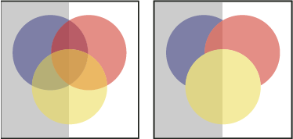

Change the opacity of artwork
You can change the opacity of a single object, the opacity of all objects in a group or layer, or the opacity of an object’s fill or stroke.
- Set the Opacity option in the Transparency panel or Control
panel.
 To
select all objects that use a specific opacity, select an object
with that opacity, or deselect everything and enter the opacity
value in the Transparency panel. Then choose Select >
Same > Opacity.
To
select all objects that use a specific opacity, select an object
with that opacity, or deselect everything and enter the opacity
value in the Transparency panel. Then choose Select >
Same > Opacity.If you select multiple objects in a layer and change the opacity setting, the transparency of overlapping areas of the selected objects will change relative to the other objects and show an accumulated opacity. In contrast, if you target a layer or group and then change the opacity, the objects in the layer or group are treated as a single object. Only objects outside and below the layer or group are visible through the transparent objects. If an object is moved into the layer or group, it takes on the layer’s or group’s opacity, and if an object is moved outside, it doesn’t retain the opacity.

Individual objects selected and set to 50% opacity (left) compared to layer targeted and set to 50% opacity (right)